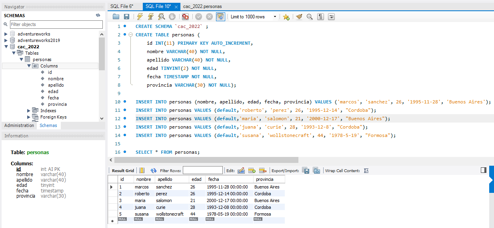

Imagen de los registros al hacer una consulta. Si desea puede
visualizar el script de creación de la database/schema junto
con la creación de tabla y registros en
mi Github. O puede directamente descargarlo desde el boton ubicado
debajo de la imagen.
